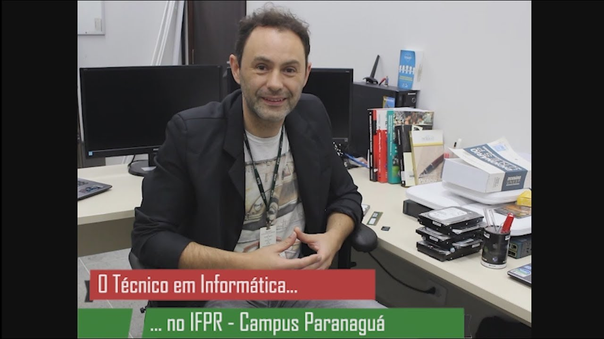

Instituto Federal do Paraná
Campus Paranaguá
Nossos Cursos
Ensino Médio Integrado
- Técnico em Informática
- Técnico em Mecânica
- Técnico em Meio Ambiente
Ensino Superior
- Licenciatura em Ciências Sociais
- Licenciatura em Física
- Tecnologia em Análise e Desenvolvimento de Sistemas
- Tecnologia em Gestão Ambiental
- Tecnologia em Manutenção Industrial
Especialização
- Especialização em Gestão Ambiental
- Especialização em Matemática Computacional
Mestrado
- Mestrado Acadêmico em Ciência, Tecnologia e Sociedade
Proeja e Cursos FIC
- Auxiliar de Agroecologia – Paranaguá
- Defensores Populares – Curitiba
- Agente de Regularização Fundiaria
- Operadores de Direito Étnicos e Coletivos – Indígenas

Desenvolvido por: Bill Gates